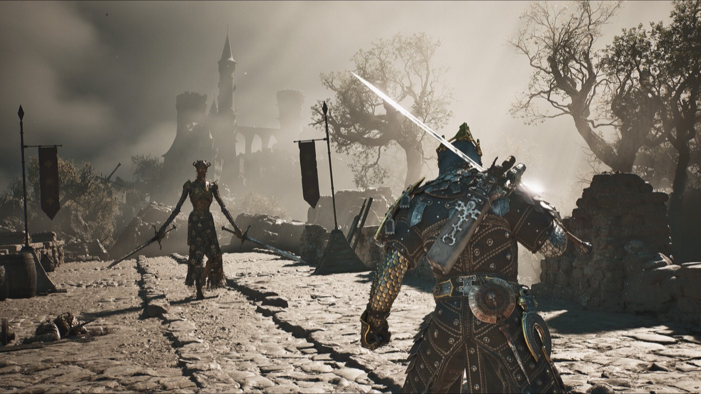

Boss guides
All Mortal Shell II bosses in order
Ten major bosses, spread across Fainweald, Mammon and the final dungeon. Six of them sit at the end of a Corrupted Gate; the rest are story-critical or hidden.

The shape of the run
The overworld holds six Corrupted Gate dungeons. Three are in Fainweald — the Glutted Mire, the Sanguine Caverns and the Prisoners' Domain. Three are in Mammon — the Conquered Temple, the Withered Shoals and the Faded Citadel. Each ends in a major boss. The remaining fights are in the final dungeon.Tested
There is also a boss in the prologue whose outcome is fixed, so it does not count toward the ten.Tested
Confirmed bosses
| Boss | Where | Notes |
|---|---|---|
| Tar Golem | Prologue | Outcome is predetermined |
| The Wandering Shepherd | Glutted Mire | Mini-boss before Magdalena |
| Magdalena, the Lady of the Woods | Glutted Mire | Usually the first major boss |
| Solnir Stillblade | Overworld | First boss shown in preview footage |
| Vellen, High Lord of Mammon | Underground, Mammon | A Shell sits in the room behind him |
| Lucian, the Thirsting Knight | The Hidden Keep | Optional Beacon dungeon |
| Sir Isaac, the Scholar-Prince | — | Region unconfirmed |
| Malborn Offspring | Late game | Compare with Zmey before committing |
| Zmey, the Unbidden | Unfound Path | Final boss |
Fights with a guide here
- Magdalena, the Lady of the Woods — loadout, the Fly Storm phase, and why the four published routes disagree
- Zmey or Malborn Offspring first? — the answer depends on your Shell, and the one source that answered it said so
General approach
Break damage is the throughline. Most fights are built around filling a boss's Break meter with skills or parries, then landing a riposte, rather than out-damaging them with raw hits.Tested The exception is any boss whose main attacks are unblockable — Magdalena is the clearest case — where dodging is simply more reliable than testing parry timing.Tested
Where this comes from
Every claim above carries a marker. These are the sources behind them, graded by how directly they touch the retail build.
- Game8 — All Mortal Shell 2 Bosses in Order TestedCount of ten major bosses, recommended order, Break-damage approach
- GameSpot — All bosses and how to beat them TestedRegion breakdown, the six Corrupted Gate names, the predetermined prologue fight
- Fextralife — Bosses TestedMandatory versus optional split, individual boss pages
- GameTyrant UnconfirmedExisting pages for Malborn Offspring and Sir Isaac, the Scholar-Prince